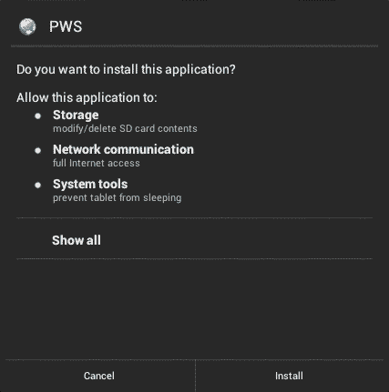

The PWS does not collect any personal information.
On install, the PWS asks for the following permissions:

The application implements POST, PUT, and DELETE methods. To do so, it has to write to the SD card. Note that on such requests only the "document root" folder is affected.
Because these HTTP methods are considered "unsafe" — the next versions of the application will provide option to disable them.
This is a network application, so it needs such permission to provide it's core service.
This is for better responsiveness (this option can be disabled in the application settings). When a mobile device goes to sleep — Android may turn down the WiFi to save battery. In such case the device needs few moments to "wake" the WiFi to serve a request. If PWS keep WiFi on, there will be no delay of the response.
PWS Privacy and Security was first mentioned at this blog.
This document was last updated on 2022-10-23.